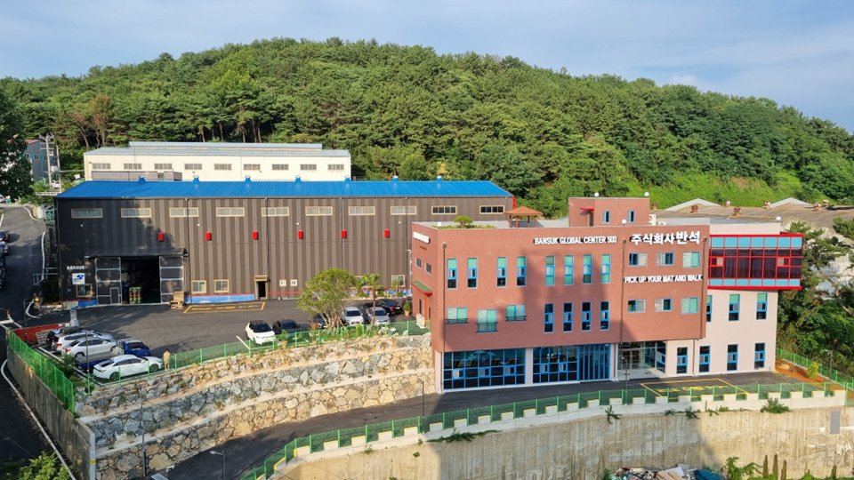
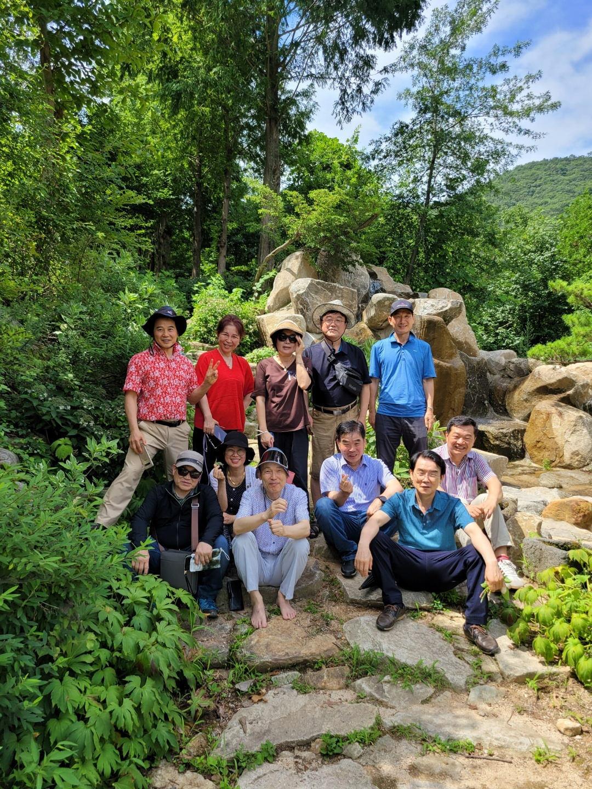

Ministry & Service
사역과 섬김
조찬포럼을 중심으로 네트워킹, 봉사, 글로컬 연결까지 — 삶의 모든 영역에서 하나님 나라를 세워갑니다.

Fellowship
조찬 교제 · 소그룹 나눔
매주 토요일 아침, 따뜻한 밥상을 나누며 서로의 일터와 삶을 격려합니다. 테이블별 소그룹 나눔과 합심 기도가 이어집니다.

Business
회원 기업 네트워킹
삼성생명·네이처셀, 켐텍, 정밀인쇄, 반석인더스트리즈 등 회원 기업 간 신뢰 기반 협력과 비즈니스 매칭을 진행합니다.

Glocal
이주민 · 글로컬 브릿지
엘림G선교회와 연계하여 18개국 이주민 네트워크와 글로컬 인재 양성 플랫폼을 구축합니다.

Culture
기독교 문화 · 역사 탐방
세계기독교박물관 방문, 한국 기독교 유적지 탐방 등 신앙의 뿌리를 함께 돌아봅니다.

Retreat
야외 수련회 · 친교
봄 야유회, 체육대회, CBMC 경남연합 수련회를 통해 깊은 형제 교제와 영적 충전의 시간을 갖습니다.

Service
교회 · 지역사회 봉사
지역 교회 협력, 이주민 한국어 교육, 다문화가정 지원, 청년 창업 멘토링으로 선한 영향력을 나눕니다.